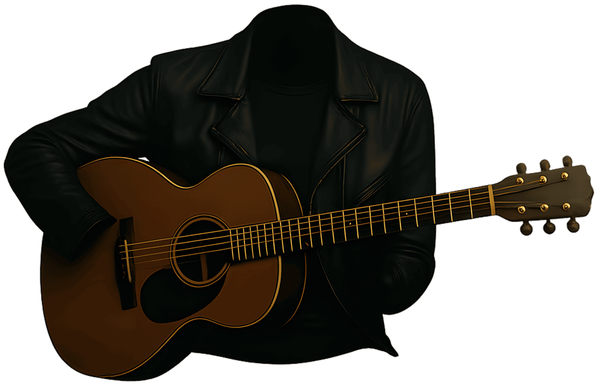

¡Hola, soy Arcappsland!

Alguien que a través de la música ha encontrado una forma de plasmar sentimientos, expresar emociones, exteriorizar pensamientos, proyectar visiones, narrar experiencias y reflejar mis luchas internas. Si te identificas con alguna de mis canciones, puede ser que hayamos recorrido el mismo camino.